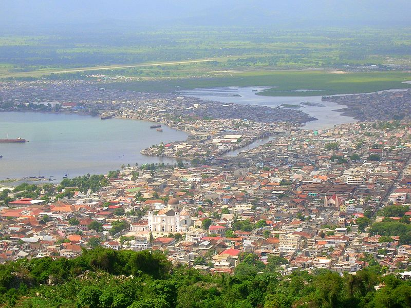
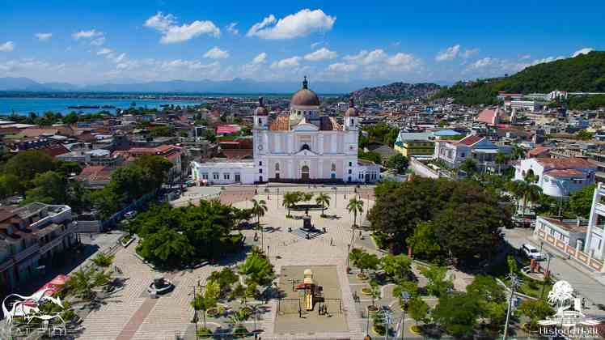

 La ville du Cap-Haitien, sous le nom de Cap-François ou Paris de Saint-Domingue, fut fondée en 1670 par un groupe d’aventuriers sous le commandement de Pierre Lelong. Elle est alors le capital de la colonie de Saint-Domingue avant la révolution Haïtienne. En Mai 1695 elle est attaquée et pilée par les Anglais, en représailles à l’expédition de la Jamaïque, menée en 1694 par Jean-Baptiste Ducasse. La ville fut incendiée une première fois du 21 au 23 Juin 1793. Le 5 ou le 6 Février 1802, lors du débarquement de l’expédition de Saint-Domingue, le général Henry Christophe, faisant face à la supériorité militaire française par une politique de la terre brûlée, déclenche l’incendie qui détruit la ville en totalité. La ville fut souvent victime de séisme et d’autres catastrophes naturelles ; par contre, elle fut considérée comme la ville la plus prospère et la plus importante de la colonie lors de la révolution Haïtienne. Elle devient même la capital de la colonie de Saint-Domingue en 1739, en édifie le Fort picolet, tout près ce fort s’érige d’autres fortifications dont le fort Magny dans lequel est enterre le général Magny. Le Port Belly, le Fort-aux-dames et le Fort St Joseph. Après l’Indépendance en 1804, elle fut appelé Cap-Haïtien, devient Cap-Henri en 1811 quand Henry s’est fait couronner Roi et fut la capitale d son royaume, retrouvera son nom sous le président Boyer après la chute du Roi Henri en 1820. Cap-Haitien étant la capitale historique du pays, fut marquée par divers évènement politiques importants dans l’histoire d’Haïti. Parmi lesquels on peut citer : l’exécution de Makandal sur la place d’armes, au Cap-Haitien en 1758. Vincent Ogé et Jean Baptiste Chavannes sont deux principaux chefs du mouvement des affranchis fut voues de coups sur la place publique du Cap en 1791, puis survient supplice de la roue qui conduit à l’éclatement de la révolte des esclaves en 1791. La bataille de Vertière en 1803, c’est le lieu de naissance de plusieurs personnalités célèbres parmi eux on peut citer : Toussaint Louverture, Sylvain Salnave, Flovil Hyppolite, Nord Alexis, Tancrède Auguste, Oswald Durant, Anténor Firmin, Rosalvo Bobo, Emile saint Lot etc.
Cap-Haitien est le chef-lieu du département du nord, est situé sur la cote septentrionale de la République d’Haïti à 19°45’ de l’altitude Nord et 72°12’ longitude ouest. La ville se trouve sur la côte Ouest de la baie du Cap-Haitien à l’embouchure de la rivière Haut -du-Cap et est dominée par la chaine de montagne du morne Jean, qui culmine à 718 mètre d’altitude. A l’Ouest de l’agglomération de Cap-Haitien. S’entend en profondeur la baie de l’acul. La superficie de la commune du Cap-Haitien est de 52,32km2 et surpopulation est de 249,54 habitants (recensement par estimation de 2009) dont 155,505 habitants pour la ville elle-même. La commune est constituée de trois(3) sections communales : Band du Nord, Haut- du- Cap, Petite-Anse, c’est une ville de très grande diversité culturelle, c’est une ville côtière. Elle est naturellement riche de ressources.
L'Université Roi Henri Christophe, un nouveau campus de l'Université d'État d'Haïti, a été inauguré le 12 janvier 2012 à Limonade, après plus de 17 mois de travaux (première pierre posée le 31 juillet 2010). Financé par la République dominicaine, il doit accueillir 10 000 étudiants dans ce qui sera considéré comme l'infrastructure universitaire la plus moderne d'Haïti. Celle-ci sera composée de plusieurs bâtiments de trois étages comportant : 72 salles de classe pour 30 étudiants chacune, une bibliothèque, des salles de réunions, des laboratoires informatiques, comptables, scientifiques, ainsi que des installations académiques, administratives et récréatives. Il existe plusieurs autres universités publiques privées au Cap-Haïtien. On peut citer l'Université Notre Dame d'Haïti, l'Université Franco-Haïtienne du Cap-Haïtien, l'Université Roi Henri Christophe, l'Université Anténor Firmin, L'université Publique du Nord au Cap-Haïtien, la Faculté de Droit, de gestion et des sciences économiques du Cap-Haïtien, et tant d'autres.
Cap-Haïtien possède un aéroport, ainsi qu'un port international. La station balnéaire de Labadie se trouve à environ 5 km au nord-ouest du Cap-Haïtien. À l’époque coloniale, la place d’armes du Cap qui a porté aussi le nom de place Notre-Dame, à cause de la position de l’église. On ne commença à l’utiliser qu’à partir de 1706, dans la partie contiguë à l’église comme une marché, par la suite on y établit un corps de garde, d’où le nom de la Place d’Armes attribué aussi à cet enclos. Le 7 février 1707, un arrêt du conseil du Cap établit en face de l’église un marché de comestibles ; ce marché survivra jusqu’au 30juin 1736, en 1774, on bâtit une église de bois à proximité du marché du morne des Capucins au Nord-Ouest de la Place, à l’endroit où se trouve aujourd’hui l’Evêché ; pour ne pas nuire à la tranquillité de l’office divin, il faut aussi noter qu’au milieu de la Place d’Armes existait aussi une magnifique fontaine, qui sera remplacée dans la période haïtienne par la statue de l’empereur Jean-Jacques Dessalines. Enfin la fontaine apparut en 1735, c’était un simple bassin de pierres surmonté d’une énorme cage de bois aux quatre cotés de laquelle se trouvait un robinet. En 1779, la place fut nivelée et limitée par une enceinte formée de traverses de bois équarri, portées par des poteaux de distance en distance, cette clôture était peinte de vert, ce qui ajouta un peu de vivacité à la Place d’Armes. À l’époque coloniale, la Place d’Armes est l’endroit où l’on passe les milices en revue, c’est aussi le lieu des exécutions.
Population totale, par sexe et population de 18 ans et plus estimées en 2009, au niveau des différentes unités géographiques sur le site de l'Institut haïtien de statistique et d'informatique (IHSI).
Denis Laurent-Ropa, Haïti, une colonie française, 1625-1802, L'Harmattan, 1993, p. 287
Isabelle Duhau et Jean Davoigneau, « Cap-Haïtien versus Jacmel, essai sur la ville en Haïti »